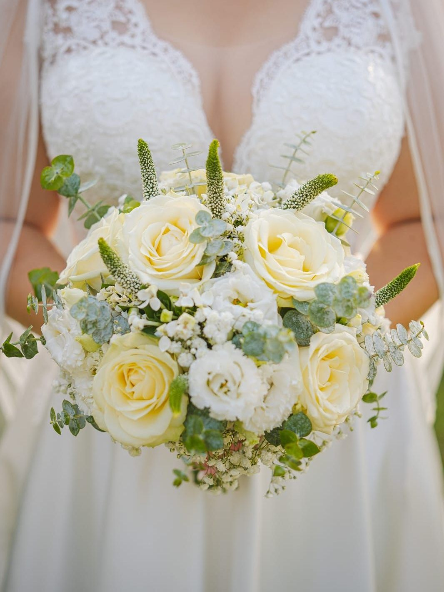

Svatby
Kytice nevěsty, korsáže, výzdoba obřadu i tabule. Než začnu vázat, chci vědět, kde se to bude odehrávat, jaké jsou šaty a jaký je roční čas. Podle toho vybírám květiny — ne naopak.
Někdo chce jednu kytici, někdo celý den včetně instalace na místě. Obojí je v pořádku.
- Zahrnuje
- Kytici nevěsty, korsáže, výzdobu obřadu a tabule, dovoz i instalaci
- Kdy se ozvat
- Ideálně 7–14 dní dopředu, u velkých svateb radši dřív